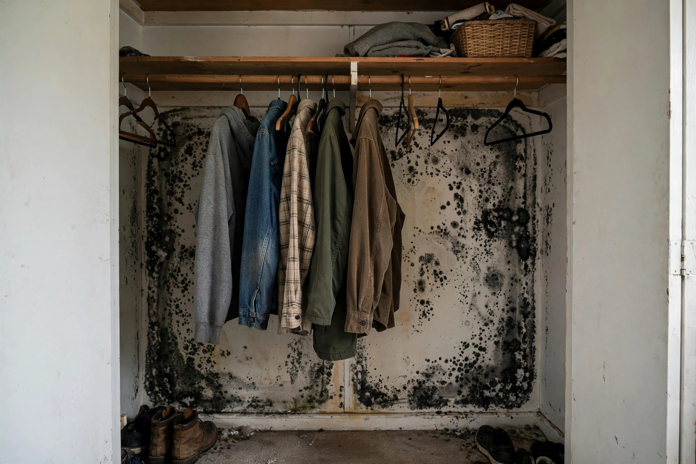

That musty closet isn't just old clothes
Closets are mold's favorite hideout: dark, still air pressed against a cold exterior wall. By the time you smell it, the back wall is usually well past a wipe-down. Proper closet mold removal clears the growth and fixes the airflow that caused it.

What we do in a moldy closet
- Empty and sort — everything comes out. Items with surface mold get HEPA-vacuumed; porous items too far gone are bagged for disposal with your approval.
- Contain the doorway — a simple poly barrier keeps spores out of the bedroom while we work.
- Remove affected drywall — mold in the paper facing means that section comes out, cut at clean lines.
- HEPA vacuum and treat — studs, remaining drywall, and shelving get vacuumed and treated.
- Dry to standard — moisture readings confirm the cavity is dry before anything goes back.
- Airflow fix — louvered doors, a trimmed door bottom, or a small vent so the closet breathes afterward.
Why closets grow mold first
The physics are simple and unforgiving.
No air movement
A closed closet door means zero circulation. Humid air sits against the coldest surface — usually the exterior wall — and condenses. Meridian's tightly built 2000s homes make this worse, because the house itself breathes less.
Clothes as insulation
Packed garments hold a layer of still, humid air against the wall. Leather shoes, wool coats, and stored fabrics absorb that moisture and feed mold directly.
North and east walls
Walls that never see direct sun stay coldest longest. In two-story Meridian homes, upstairs master closets on north walls are the single most common closet mold location we see.
Hidden plumbing
Closets that back onto bathrooms can hide slow pipe seeps. A supply line sweating inside the wall keeps the closet side damp for months before anyone connects the dots.
A master closet that smelled like a basement
The owners assumed the mustiness was just old carpet in the closet. Behind the shoe racks, the lower back wall was furred with growth where a north-facing exterior wall met the slab — the coldest, dampest corner of the house. The carpet came out, the lower drywall was cut and replaced, and a louvered door went in. The smell was gone before the paint dried.
After the cleanup: keep closets dry
Leave breathing room
Keep stored items a few inches off exterior walls. That gap is the cheapest mold prevention you own.
Crack the door
A closet door left ajar — or swapped for a louvered one — lets house air circulate. Stagnation is the enemy.
Watch the seasons
Check closet back walls each fall when heating season starts and each spring when irrigation ramps up. Two minutes, twice a year.
Don't ignore the smell
A musty closet is never "just how closets smell." The EPA notes that mold can grow within 24–48 hours on damp materials (EPA — Mold, Moisture & Your Home) — early action keeps a small job small.
Sources: EPA — Mold, Moisture & Your Home CDC — Mold and Health
Closet mold questions, answered directly
Can I just paint over closet mold?
No. Paint seals the surface but mold keeps growing underneath in the drywall paper, and it will bleed through within months. The affected material has to come out.
Are my clothes ruined?
Often not. Non-porous belongings and washable textiles can be HEPA-vacuumed, then laundered. Porous items like cardboard boxes and some shoes may need to go. We sort with you rather than deciding for you.
Why does it keep coming back in the same closet?
Because the moisture condition never changed. Recurrence in one spot almost always means condensation on that wall or a hidden seep — removal without the airflow or leak fix is temporary.
Do I need a dehumidifier in the closet?
Rarely. Airflow fixes — a louvered door, a trimmed door bottom, spacing items off the wall — solve most closet moisture. A dehumidifier treats the symptom; air movement treats the cause.
How long does a closet job take?
Most closet cleanups finish in a half day: empty, contain, cut, clean, dry, and advise on the door. Larger walk-ins with extensive growth can run a full day.
Smell something in the closet?
Don't wait for it to spread to the bedroom. One call and we'll take a look.